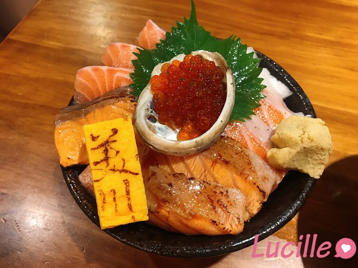

[食記｜台北] 美川壽司
![[食記｜台北] 美川壽司](https://tayinv.github.io/images/post/Food/Japan001/01.jpg)
餐廳種類：日式
目錄
先特別說明，以下資訊純屬個人觀感心得
用餐日期：2022/08/03(三)
個人綜合評價：🌕🌕🌕🌕🌗
是否會想回訪：⭕
個人心得與餐點
美川壽司位於內湖區西湖站與港墘站之間的小巷弄內，雖然位於小巷弄內，但外觀明亮，算是顯眼
附近有有名的鳳華拉麵，路過時有不少人在排隊
這次與朋友約在美川壽司，其實對生魚片沒有涉略的我，西前完全沒聽過這家日式料理
但吃過後驚為天人，完全可以說他排在我目前吃過的的生魚片中的前幾名💯
—🐟我是分隔線🐟—
雖然美川壽司店內的空間不大，沒辦法容納太多人，雖然稍微感覺壅擠，但給人一種溫馨的感覺(應該吧!?)
座位區有分為吧檯區與方桌區
建議來訪前要先訂位，不然用餐時間會是一位難求的狀況🙌
但平日中午時段可能無法定位，建議先詢問店家
美川壽司主要是賣生魚或炙燒丼飯，另外也有烤物與茶碗蒸可以選擇
點丼飯類餐點話，會附上一碗味噌湯，味噌湯的部分是可以免費無限續加的，特別提一下他的味噌湯有用蝦頭去熬煮，會喝到濃濃的蝦味😋 我的這一碗還有一個大大的蝦頭在裡面
身為鮭魚愛好者，我這次點的餐點是鮭魚親子丼
他總共有3片鮭魚肚、鮭魚4片、還有鮭魚卵
其中3片店家有幫忙做成半炙燒，讓我吃起來不會那麼膩

👉鮭魚的部分不誇張，軟嫩到有入口即化的感覺，他的生魚片非常新鮮，實在無可挑剔
👉味噌湯喝起來也很特別，不會太重口味，但不吃蝦的人要注意
👉有麥茶可以免費喝
👉照片看起來看起來份量不大，但本人吃完整碗丼飯+味噌湯是飽足感十足，如果是男生食量稍微較大的人，味噌湯可以無限續
👉另外推薦朋友點的美川海鱻丼，整個CP值報表！內容有鮑魚、鮭魚天使紅蝦1隻、季節鮮魚6~7種、花枝、新鰻。一整晚能吃到超級多種生魚片，實在是大推！
菜單：美川壽司Facebook
最後再補充一下個人的評價：
以下純屬個人觀感：
餐點：🌕🌕🌕🌕🌕
價格：🌕🌕🌕🌗🌑
整潔：🌕🌕🌕🌕🌑
環境：🌕🌕🌕🌗🌑
服務：🌕🌕🌕🌕🌗
個人綜合評價：🌕🌕🌕🌕🌗
回到目錄
店家資訊
- 電話地址
電話：02-2627-2558
- 營業時間
(每周一公休)
午餐時段：12:00~14:00
晚餐時段：18:00~22:00
- 定位方式
-
臉書私訊
-
在10：00-12：00、14：00-17：50 致電訂位 (推薦)
回到目錄
小小建議與評價
由於這次我們是有定位的，在抵達的時候前面有一組客人剛好是沒訂位並差不多用完餐的，店家就有去跟他們說時間差不多了，所以還是建議大家來這邊用餐要先訂位
另外稱讚一下他們的店員，服務很親切，送餐時介紹菜色也介紹得很完善齊全
現在很多店家都會有那種5興好評送小菜，評論完全是洗出來的，但這家的好評完全是憑自己實力得來的啊！
總體來說是一間很讚的日式料理👍